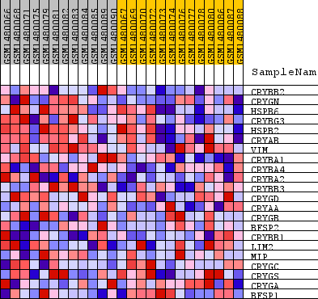
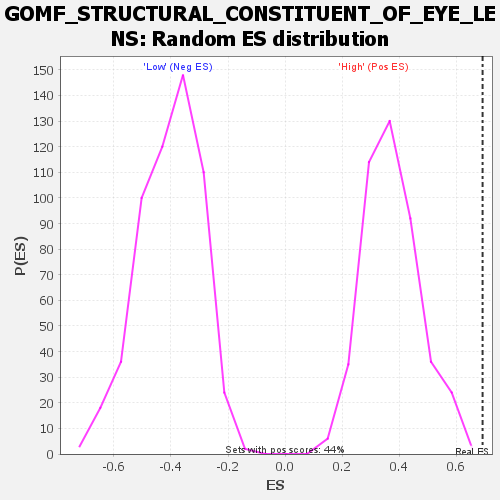

Profile of the Running ES Score & Positions of GeneSet Members on the Rank Ordered List
| Dataset | WG6v3.CPT1A.cls#High_versus_Low.CPT1A.cls#High_versus_Low_repos |
| Phenotype | CPT1A.cls#High_versus_Low_repos |
| Upregulated in class | High |
| GeneSet | GOMF_STRUCTURAL_CONSTITUENT_OF_EYE_LENS |
| Enrichment Score (ES) | 0.69267637 |
| Normalized Enrichment Score (NES) | 1.8555171 |
| Nominal p-value | 0.0022779044 |
| FDR q-value | 1.0 |
| FWER p-Value | 0.715 |
| SYMBOL | TITLE | RANK IN GENE LIST | RANK METRIC SCORE | RUNNING ES | CORE ENRICHMENT | |
|---|---|---|---|---|---|---|
| 1 | CRYBB2 | CRYBB2 | 171 | 0.147 | 0.1808 | Yes |
| 2 | CRYGN | CRYGN | 211 | 0.134 | 0.3526 | Yes |
| 3 | HSPB6 | HSPB6 | 391 | 0.107 | 0.4822 | Yes |
| 4 | CRYBG3 | CRYBG3 | 599 | 0.091 | 0.5899 | Yes |
| 5 | HSPB2 | HSPB2 | 725 | 0.084 | 0.6927 | Yes |
| 6 | CRYAB | CRYAB | 2086 | 0.048 | 0.6845 | No |
| 7 | VIM | VIM | 4491 | 0.023 | 0.5903 | No |
| 8 | CRYBA1 | CRYBA1 | 5860 | 0.014 | 0.5385 | No |
| 9 | CRYBA4 | CRYBA4 | 6166 | 0.013 | 0.5397 | No |
| 10 | CRYBA2 | CRYBA2 | 6302 | 0.012 | 0.5489 | No |
| 11 | CRYBB3 | CRYBB3 | 7589 | 0.007 | 0.4922 | No |
| 12 | CRYGD | CRYGD | 7609 | 0.007 | 0.5008 | No |
| 13 | CRYAA | CRYAA | 9669 | 0.001 | 0.3959 | No |
| 14 | CRYGB | CRYGB | 9885 | 0.000 | 0.3852 | No |
| 15 | BFSP2 | BFSP2 | 10170 | -0.001 | 0.3712 | No |
| 16 | CRYBB1 | CRYBB1 | 10682 | -0.002 | 0.3475 | No |
| 17 | LIM2 | LIM2 | 10690 | -0.002 | 0.3499 | No |
| 18 | MIP | MIP | 11157 | -0.004 | 0.3305 | No |
| 19 | CRYGC | CRYGC | 13007 | -0.010 | 0.2483 | No |
| 20 | CRYGS | CRYGS | 13724 | -0.014 | 0.2289 | No |
| 21 | CRYGA | CRYGA | 14059 | -0.016 | 0.2318 | No |
| 22 | BFSP1 | BFSP1 | 16267 | -0.034 | 0.1626 | No |

